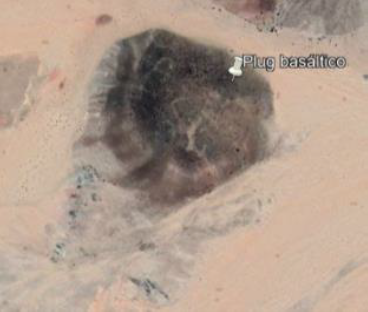
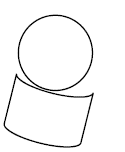
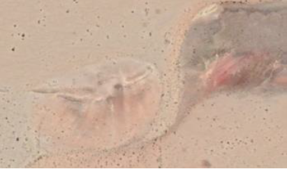
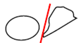
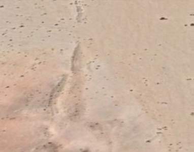
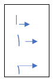

A Norte de Namibe, a área em estudo encontra-se localizada a uma latitude de 15º02'39.81'' S e uma longitude de 12º23'07.12'' E.
A região em estudo é uma zona pouco afetada pela deposição de sedimentos de origem eólica, no entanto, a superfície do terreno é afetada pelo vento, ou seja, há erosão. Estes mesmos ventos trazem sedimentos do continente.
Esta área é constituída por dunas no seu litoral, não apresenta uma cobertura vegetal nem sedimentar, e é uma área em que a pouca vegetação que possa existir não interfere com a fotointerpretação.
No local em análise não existem vestígios de presença de algum caminho. Além disso, a área possui pouca acessibilidade, daí a falta de caminhos.
Através da análise com recurso ao Google Earth é possível observar que não existe nenhum assentamento povacional na região. É um local afastado de povoações, sem caminhos de fácil acessibilidade e por isso não constitui uma área habitacional.
Pela fotointerpretação podemos concluir que a área possui bastantes mulolas ou linhas de água de escorrência temporária, sendo que estas decrescem de altitude à medida que se dirigem para Sul (267m de altitude a Norte e 222m a Sul).
A área não é uma região aplanada, logo existem diferentes elevações nos variados locais. Traçando um perfil A-B no sentido W-E, é possível observar (figura 3) que existe um ponto com altitude de 283m mais para E, notando evidentemente uma tendência para uma altitude maior para a zona mais a Este. No entanto é de notar que nos 0.75km até aos 3km, aproximadamente, há um decréscimo de altitude e um posterior crescimento, o que indica um pequeno vale.
Ao traçar um perfil C-D no sentido N-S, é possível observar (figura 4) que existe um ponto com altitude de 360m mais a Norte, sendo que a altitude vai maioritariamente decrescendo para Sul. No entanto é de notar que do quilómetro 2.25km até sensivelmente ao 3km, há um decréscimo de altitude e um posterior crescimento. O decréscimo corresponde à zona de mulolas e sedimentos mais agilizados ou não tão consolidados, e a partir dos 3km aparecem novamente as rochas que apresentam uma altitude maior.
A região não apresenta nenhuns sinais de atividade extrativa, nem de trabalhos mineiros quer presentes quer no passado. Isto pode dever-se à pouca acessibilidade da região uma vez que quase não existem caminhos exceto as mulolas, e também pelo pouco interesse pelos minérios, rochas e minerais que estão presentes.
Existem diversos trabalhos de pesquisa na região de Angola de Namibe, no entanto, para esta área não existem nenhuns trabalhos de pesquisa.
Como já referido anteriormente, existem poucas ou nenhumas condições para um acesso seguro e economicamente viável para a possível exploração da região.
Encontra-se perto de uma formação eruptiva, que está localizada mais a Norte, no entanto, a composição nesta área difere bastante dessa formação eruptiva.
A Sul encontra-se uma estrutura cristalina metamórfica.
A Norte encontra-se uma estrutura eruptiva basáltica.
Ao centro encontra-se uma bacia sedimentar que é delineada pelas duas estruturas referidas anteriormente.
Geologicamente, esta área apresenta rochas afetadas pelo ciclo Kibariano, sendo que mais para Este podem estar presentes rochas do ciclo Ebureano e mais para Sul, rochas do Parafriacano. (Anexo 1 - Carta Geológica de Angola 1:1 000 000)
Através da análise da Carta Geológica de Angola à escala 1:1 000 000, é possível observar que a área em estudo se encontra numa zona de depressão perioceânica, apresentando uma idade do Paleocénico e Eocénico. Este local é constituído essencialmente por grés, margas, calcários e laterites. A região é extremamente argilosa, destacando-se as rochas mais consolidadas, assinaladas na figura como Tipos de Rochas.
Além disto, existem levantamentos na região que são compostos essencialmente de depósitos terrígeno-calcários do Meso-Cenozoico e a região encontra-se perto de uma zona de falha.
Geomorfologicamente a superfície de Angola, segundo MARQUES (1977), distribui-se por sete unidades e oito subunidades. Estas são caracterizadas por uma certa identidade de paisagem e estabilidade do meio. Tais unidades tentam integrar as formas de relevo, a litologia, a tectónica, as bacias hidrográficas, o clima, os solos e a vegetação. Em função disto foram consideradas as seguintes unidades e correspondentes subunidades:
A área em estudo apresenta na sua maioria da extenção uma bacia sedimentar, daí que o seu fundo regionla passa por rochas sedimentares como é possível observar na figura seguinte.
No local encontra-se ao centro uma pequena bacia sedimentar que está no meio de rochas eruptivas, sendo esta bacia relativamente recente, possivelmente Terciária.
Dentro desta bacia encontra-se um plug basáltico, sendo que mais a Sul deste plug, já é metamórfico.
Dentro desta bacia também é possível observar uma falha recente com direção N-S. Ao longo da bacia consegue-se definir um estrato, apresentando uma rocha estratiforme, sendo possivelmente um sistema horst gabren.
A falha presente tem uma direção Norte Sul e inclina para Norte, com pouca inclinação (por volta dos 20º de inclinação).
Esta bacia encontra-se no meio de dois tipos de rochas, a Norte estão rochas eruptivas, num complexo eruptivo basáltico, e a Sul estão rochas cristalinas com metassedimentos, do tipo metamórficas.
| Tipologia de padrões | Padrão | Análise cinemática | Notícia descritiva | Replicação |
|---|---|---|---|---|
| Plug Basáltico |  |  | Círculo - estrutura basáltica Retângulo - estrutura metamórfica. |
A estrutura não se repete. |
| Falha |  |  | Falha tardia presente na estrutura sedimentar. | Existe apenas uma falha que atravessa possivelmente todas as litologias descritas. |
| Estratiforme |  |  | Estrutura estratiforme presente na bacia sedimentar com inclinação para N. | Estrutura que se estende na direção W-E ao longo de toda a área em análise. |
A área em análise não possui grande interesse para a prospeção pois não é acessível e não apresenta estruturas que sejam índices e alvos de prospeção. No entanto podem se explorar a bacia sedimentar e os dois tipos de rochas/estruturas presentes, apesar de não ser viável.
Em termos de hierarquia de importância de alvos de prospeção, a bacia sedimentar encontra-se no topo com a maior importância, sendo seguida pelas duas outras estruturas presentes.
Algumas ações que podem ser feitas para a preparação do trabalho de solo passam por uma piquetagem reticular ou linear, fazer a identificação de locais de colheita de “streams”, solo e roços, e utilizar a fotogrametria.